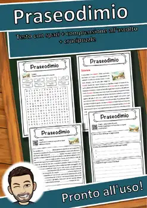
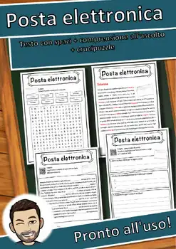
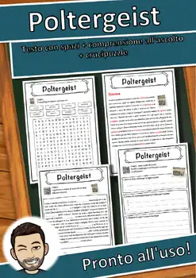
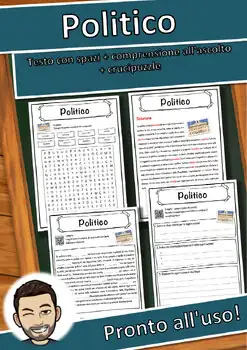
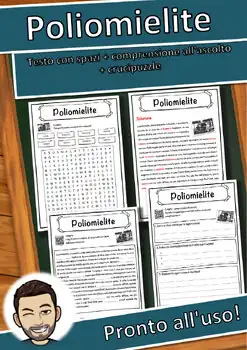

New resources
My newest resources appear here first. The list updates automatically.
48 resources

Promezio – Italian Reading Comprehension Worksheet (Scheda): Cloze & Listening

Programmazione – Italian Reading Comprehension Worksheet (Scheda didattica)

Professore – Italian Reading Comprehension Worksheet (Scheda): Cloze & Listening
Professione – Italian Reading Comprehension Worksheet (Scheda didattica)
Prodotto interno lordo – Italian Reading Comprehension Worksheet

Porto – Italian Reading Comprehension Worksheet (Scheda): Cloze & Listening

Principe – Italian Reading Comprehension Worksheet (Scheda): Cloze & Listening
Principato di Monaco – Italian Reading Comprehension Worksheet
Primo soccorso – Italian Reading Comprehension Worksheet (Scheda didattica)
Primavera di Praga – Italian Reading Comprehension Worksheet (Scheda didattica)
Primavera araba – Italian Reading Comprehension Worksheet (Scheda didattica)

Primavera – Italian Reading Comprehension Worksheet (Scheda): Cloze & Listening

Primato – Italian Reading Comprehension Worksheet (Scheda): Cloze & Listening
Prima guerra mondiale – Italian Reading Comprehension Worksheet

Prigione – Italian Reading Comprehension Worksheet (Scheda): Cloze & Listening

Presente – Italian Reading Comprehension Worksheet (Scheda): Cloze & Listening
Preposizione – Italian Reading Comprehension Worksheet (Scheda didattica)
Premio Oscar – Italian Reading Comprehension Worksheet (Scheda didattica)

Preistoria – Italian Reading Comprehension Worksheet (Scheda): Cloze & Listening

Preghiera – Italian Reading Comprehension Worksheet (Scheda): Cloze & Listening
Precipitazione – Italian Reading Comprehension Worksheet (Scheda didattica)

Praseodimio – Italian Reading Comprehension Worksheet (Scheda didattica)

Praga – Italian Reading Comprehension Worksheet (Scheda): Cloze & Listening

Pozzo – Italian Reading Comprehension Worksheet (Scheda): Cloze & Listening

Povertà – Italian Reading Comprehension Worksheet (Scheda): Cloze & Listening

Potassio – Italian Reading Comprehension Worksheet (Scheda): Cloze & Listening

Posta elettronica – Italian Reading Comprehension Worksheet (Scheda didattica)

Poseidone – Italian Reading Comprehension Worksheet (Scheda): Cloze & Listening

Posata – Italian Reading Comprehension Worksheet (Scheda): Cloze & Listening

Portogallo – Italian Reading Comprehension Worksheet (Scheda): Cloze & Listening

Porta – Italian Reading Comprehension Worksheet (Scheda): Cloze & Listening
Pop art – Italian Reading Comprehension Worksheet (Scheda): Cloze & Listening

Plancton – Italian Reading Comprehension Worksheet (Scheda): Cloze & Listening
Pittura – Italian Reading Comprehension Worksheet (Scheda): Cloze & Listening

Pistola – Italian Reading Comprehension Worksheet (Scheda): Cloze & Listening

Ponte – Italian Reading Comprehension Worksheet (Scheda): Cloze & Listening

Pongo – Italian Reading Comprehension Worksheet (Scheda): Cloze & Listening

Pompei – Italian Reading Comprehension Worksheet (Scheda): Cloze & Listening

Poltergeist – Italian Reading Comprehension Worksheet (Scheda didattica)
Polso arterioso – Italian Reading Comprehension Worksheet (Scheda didattica)

Polonio – Italian Reading Comprehension Worksheet (Scheda): Cloze & Listening
Polonia – Italian Reading Comprehension Worksheet (Scheda): Cloze & Listening

Polmonite – Italian Reading Comprehension Worksheet (Scheda): Cloze & Listening

Polmone – Italian Reading Comprehension Worksheet (Scheda): Cloze & Listening
Polizia – Italian Reading Comprehension Worksheet (Scheda): Cloze & Listening

Politico – Italian Reading Comprehension Worksheet (Scheda): Cloze & Listening

Poliomielite – Italian Reading Comprehension Worksheet (Scheda didattica)

Polaris – Italian Reading Comprehension Worksheet (Scheda): Cloze & Listening
No resources found – try a different search term or filter.